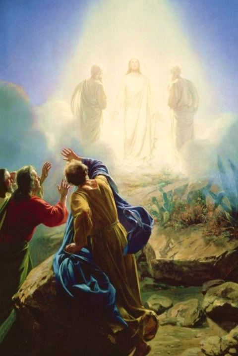

Leitura Orante
Leitura do dia
Quinta-feira da 18a Semana do Tempo Comum
Transfiguração do Senhor
(Branco, glória, prefácio próprio – ofício da festa)
6 de agosto de 2020
Leitura Orante do Evangelho
Ouça o áudio da oração e reflexão do padre Francisco das Chagas


Oração do dia
Ó Deus, que na gloriosa transfiguração de vosso Filho confirmastes os mistérios da fé pelo testemunho de Moisés e Elias e manifestastes, de modo admirável, a nossa glória de filhos adotivos, concedei aos vossos servos e servas ouvir a voz do nosso filho amado e compartilhar da sua herança. Por Nosso Senhor Jesus Cristo, Vosso Filho, na unidade do Espírito Santo.
Leitura: Daniel 7,9-10.13-14
9Eu continuava olhando até que foram colocados uns tronos, e um ancião de muitos dias aí tomou lugar. Sua veste era branca como neve, e os cabelos da cabeça, como aã pura; seu trono eram chamas de fogo, e as rodas do trono, como fogo em brasa. 10Derramava-se aí um rio de fogo que nascia diante dele; serviam-no milhares de milhares, e milhões de milhões assistiam-no ao trono; foi instalado o tribunal, e os livros foram abertos. 13Continuei insistindo na visão noturna, e eis que, entre as nuvens do céu, vinha um como filho de homem, aproximando-se do ancião de muitos dias, e foi conduzido à sua presença. 14Foram-lhe dados poder, glória e realeza, e todos os povos, nações e línguas o serviam: seu poder é um poder eterno que não lhe será tirado, e seu reino, um reino que não se dissolverá. – Palavra do Senhor.
Salmo Responsorial: 96 (97)
Deus é rei, é o Altíssimo, muito acima do universo
!
Deus é rei! Exulte a terra de alegria, e as ilhas numerosas rejubilem! Treva e nuvem o rodeiam no seu trono, se apóia na justiça e no direito.
Deus é rei, é o Altíssimo, muito acima do universo !
As montanhas se derretem como cera ante a face do Senhor de toda a terra; e assim proclama o céu sua justiça, todos os povos podem ver a sua glória.
Deus é rei, é o Altíssimo, muito acima do universo !
Porque vós sois o Altíssimo, Senhor, muito acima do universo que criastes, e de muito superais todos os deuses.
Deus é rei, é o Altíssimo, muito acima do universo !Evangelho: Mateus 17,1-9
1Jesus tomou consigo Pedro, Tiago e João, seu irmão, e os levou a um lugar à parte, sobre uma alta montanha. 2E foi transfigurado diante deles; o seu rosto brilhou como o sol, e as suas roupas ficaram brancas como a luz. 3Nisto apareceram-lhes Moisés e Elias, conversando com Jesus. 4Então Pedro tomou a palavra e disse: “Senhor, é bom ficarmos aqui. Se queres, vou fazer aqui três tendas: uma para ti, outra para Moisés e outra para Elias”. 5Pedro ainda estava falando quando uma nuvem luminosa os cobriu com sua sombra. E da nuvem uma voz dizia: “Este é o meu Filho amado, no qual eu pus todo meu agrado. Escutai-o!” 6Quando ouviram isso, os discípulos ficaram muito assustados e caíram com o rosto em terra. 7Jesus se aproximou, tocou neles e disse: “Levantai-vos e não tenhais medo”. 8Os discípulos ergueram os olhos e não viram mais ninguém, a não ser somente Jesus. 9Quando desciam da montanha, Jesus ordenou-lhes: “Não conteis a ninguém esta visão até que o Filho do Homem tenha ressuscitado dos mortos”. – Palavra da salvação.
Leituras do mês
TAGS
missao Amazonia evengel covid-19 indigenas novica papa francisco
Destaques
Província Stella Matutina
Rua São Benedito, 2146 - Santo Amaro - São Paulo - SP |
Tel. (11) 5547-7222


Província Spiritus Divinae Sapientiae
Rua Arnaldo Janssen, 320 - Cara-Cara - Ponta Grossa - PR |
Tel. (42) 3326 4091